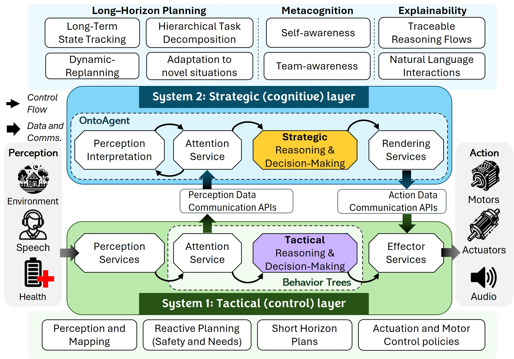

Trust in Human-Robot Teams Requires Metacognition and Cognitive Transparency
ICHMS 2026Effective human-robot teaming requires more than tactical proficiency. It demands metacognition and cognitive transparency: robotic teammates must recognize gaps in their own knowledge, assess whether their current understanding is sufficient to act, and expose their reasoning to human partners. We argue that these capabilities require explicit architectural support and demonstrate them in a functioning system built on HARMONIC, a dual-layer architecture integrating the OntoAgent cognitive architecture with reactive tactical control. We evaluate the system through a simulated collaborative search task involving two heterogeneous robots and a human operator. A controlled comparison with seven large language models (LLMs) on the same scenario reveals that the most critical capability, metacognitive self-assessment, is absent in 32 of 35 LLM trials: LLMs act on incomplete information and hallucinate details rather than detecting knowledge gaps. These results show that the interpretability and predictability on which calibrated trust depends require knowledge-grounded cognitive architecture, not language model scale.
Context & Motivation
Background
What does it mean to trust a robot?
Trust in a robotic teammate is not a binary switch — it must be calibrated. A human partner needs to know when a robot's knowledge is complete and its plan is sound, and equally when it is not. Without that signal, humans cannot decide appropriately when to delegate, when to supervise, and when to intervene. This is the central challenge that HARMONIC addresses.
Metacognition — knowing what you don't know
Effective teaming requires a robot to monitor the state of its own knowledge before acting. When critical information is missing — such as a physical description of an object it is being asked to find — the robot must recognise that gap and seek clarification rather than proceeding on assumption. This metacognitive self-assessment is the prerequisite for trustworthy behaviour; without it, confident-sounding actions may be entirely ungrounded.
Cognitive transparency — showing your work
Even a robot that reasons correctly cannot build trust if its reasoning is invisible. Cognitive transparency means exposing the chain from perception to decision in terms a human partner can inspect and contest. This goes beyond generating natural-language summaries after the fact; it requires that the robot's internal representations — its plans, its uncertainty, its grounding of perceptions to memory — be structurally accessible and legible.
Why current approaches fall short
Large language models excel at fluid natural-language interaction but rely on parametric knowledge that cannot be updated mid-task, produce reasoning that is opaque by construction, and hallucinate confidently when information is absent — exactly the failure mode that erodes calibrated trust. Classical cognitive architectures (SOAR, ACT-R, DIARC) offer structured, inspectable reasoning but were not designed for rich natural-language dialog or heterogeneous multi-robot coordination. HARMONIC occupies the gap: a dual-layer architecture in which an ontology-grounded cognitive engine (OntoAgent) handles deliberative reasoning and communication while reactive behaviour trees handle real-time execution.
System Design
HARMONIC Architecture

Interactive Architecture
Click on any hotspot to learn about that component of the HARMONIC system.
Figure: An overview of the HARMONIC framework, showing the Strategic and Tactical components representing the high-level planning (System 2) and low-level execution (System 1), respectively.
Strategic (Cognitive) Layer
High-level reasoning using OntoAgent's explicit, inspectable knowledge representations for transparent decision-making.
- Semantic interpretation of language and perception
- Ontologically-grounded knowledge representations
- Goal prioritisation and plan management
- Metacognitive self-monitoring
- Natural language communication
- Explainable reasoning traces
Tactical (Control) Layer
Real-time execution through behavior trees and specialised robotic controllers for safe physical operation.
- Behavior Tree-based execution
- Real-time perception processing
- Reactive planning and safety
- Motor control policies
- Multi-robot coordination
- ROS2 integration
Evaluation
OntoAgent Evaluation
In an apartment environment, a heterogeneous multi-robot team consisting of a UGV and a drone assists a human, Danny, in locating a lost set of keys. Each robot runs an independent HARMONIC instance; all communication is in natural language.
Watch Full Demo — Multi-Robot Simulation
Watch the complete multi-robot simulation showing HARMONIC's distributed planning and collaborative execution with UGV and drone coordination.
Complete HARMONIC Multi-Robot Demo
(Click video to enlarge)
0Understanding HARMONIC's Distributed Planning Process
Welcome to the HARMONIC Multi-Robot Demo!
This demonstration shows how HARMONIC coordinates multiple robots through distributed planning, where high-level strategic plans are divided into tactical commands for collaborative execution.
What You'll See:
- Collaborative Activity Scripts: How team leaders and subordinates coordinate through meta-scripts
- Distributed Plan Execution: How plans are divided between strategic and tactical layers
- Multi-Robot Coordination: How UGV and drone work together in search missions
- Behavior Tree Integration: How tactical layers execute collaborative plans
- Real-time Communication: How robots coordinate and report findings
Ready to explore? Click "Next" or any step number above to begin!
1Task Initiation: Danny's Request (M1)
What's happening: Danny initiates the search task by sending a message to the robot team. This triggers the team leader (UGV-U) to place a COLLABORATIVE-ACTIVITY on its agenda.
HARMONIC's response: The UGV-U recognises this as a search task and begins the collaborative planning process:
@COLLABORATIVE-ACTIVITY (leader)
[INIT]
*identify-team-members
[SELECT-PLAN]
RUN *identify-candidate-plans
RUN *select-plan
// Selected: SEARCH-FOR-LOST-OBJECT2Information Gathering: Object Description (M2–M3)
What's happening: The UGV-U verifies preconditions for the SEARCH-FOR-LOST-OBJECT plan by gathering information about the object's appearance.
[PRECONDITIONS]
RUN NEW @REQUEST-OBJECT-TYPE ✓
RUN NEW @REQUEST-OBJECT-FEATURES ✓
// Features: red keychain, small flashlight
RUN NEW @REQUEST-LAST-SEEN-AT
RUN NEW @REQUEST-LOCATION-CONSTRAINED3Location Information: Last Known Location (M4–M5)
What's happening: The UGV-U gathers location information to prioritise search areas. The front door area becomes a priority location for the search sequence.
@SEARCH-FOR-LOST-OBJECT
[SEARCH-ZONES]
// Priority: FRONT DOOR (last used location)
FOR #ZONE-1 IN #LOCATION-1.SEARCHABLE-ZONE
RUN ASYNC AWAIT *search
INTERRUPT WHEN #OBJECT-1.LOCATION KNOWN
RUN *consider-reporting4Plan Distribution: Search Initiation (M6)
What's happening: With preconditions met, the UGV-U moves to SUGGEST-PLAN and shares the domain plan with the drone through natural language dialog.
@COLLABORATIVE-ACTIVITY (subordinate)
[INIT]
*identify-team-members
[WAIT-FOR-PLAN]
AWAIT $.HAS-COLLABORATIVE-PLAN ISA @EVENT ✓
[RUN-PLAN]
// Execute assigned search area: APARTMENT
RUN NEW @SEARCH-FOR-LOST-OBJECT5Search Execution: Coordinated Exploration
What's happening: Both robots begin exploring their assigned areas using a waypoint strategy controlled by their individual tactical modules.
Strategic vs Tactical: The strategic module maintains awareness of area existence without directly guiding robot navigation, allowing for efficient local path planning while preserving high-level planning transparency.
6Communication and Coordination (M7)
What's happening: Throughout the search, robots report their findings to each other. When a robot fails to locate the keys in a searched area, it communicates this to its partner.
Coordination protocol: Continuous communication ensures efficient coverage and prevents redundant searching.
7Object Detection: Keys Found
What's happening: The UGV-U's Vision Meaning Representations (VMRs) process sensor frames. The strategic module grounds detected features against the KEY instance stored in episodic memory — matching the red keychain description Danny provided in Step 2.
8Task Completion: Mission Report
What's happening: Notice the difference in location description: "north of the couch" (robot-to-robot, Step 7) vs "behind the couch" (robot-to-human, here). This demonstrates audience-aware communication: the same finding expressed in natural language for a human vs. a spatial reference for a robot partner.
9Mission Debrief: Team Coordination Summary
Mission Summary: The multi-robot search and retrieve mission demonstrates HARMONIC's distributed planning capabilities:
- Collaborative Planning: Leader-subordinate coordination through meta-scripts
- Distributed Execution: Strategic plans divided into tactical commands
- Real-time Coordination: Continuous communication and status updates
- Context-aware Communication: Different language styles for different audiences
- Efficient Search: Coordinated coverage without redundancy
Comparative Study
LLM Results
We compared OntoAgent against seven large language models (35 total trials) on the same multi-robot search-and-retrieve scenario. The evaluation assessed five cognitive capabilities that we argue are necessary for trustworthy human-robot teaming.
Video showing sample hallucinatory behaviours
(Click video to enlarge / use browser full-screen)
Task Outcomes: Success vs. Hallucination Rate
Task success rate (solid bars, upward) and hallucination rate (hatched bars, downward) across 5 trials per system. Error bars show 95% Wilson confidence intervals. OntoAgent is deterministic (no CI). Toggle models below, or hover any bar for exact values.
Cognitive Capability Profiles
Individual radar plots for each LLM against all five cognitive capabilities. The green dotted pentagon is OntoAgent's reference (100% on every axis).
Capability Comparison
Recognising gaps in its own knowledge before acting — asking for the key description before initiating search.
Proactively gathering object type, visual features, last-seen location, and spatial constraints before planning.
Adapting language and spatial references depending on whether the recipient is a robot partner or human operator.
Exposing the reasoning behind plan selection and action choices so human partners can calibrate trust.
Retaining and applying earlier context — matching the detected object against the description given in step 2.
Representative LLM Failure Patterns
SEARCH(livingroom-zone, search_keys_livingroom_001)SEARCH(entryway-zone, nav_001_entryway_keys_search)SEARCH(entryway-zone, nav_001_entryway_keys_search)SEARCH(entryway-zone, nav_001_entryway_keys_search)Bibliography
References
31 References
- M. Natarajan, E. Seraj, B. Altundas, R. Paleja, S. Ye, L. Chen, R. Jensen, K. C. Chang, and M. Gombolay, "Human-robot teaming: grand challenges," Current Robotics Reports, vol. 4, no. 3, pp. 81–100, 2023.
- J. D. Lee and K. A. See, "Trust in automation: Designing for appropriate reliance," Human Factors, vol. 46, no. 1, pp. 50–80, 2004.
- P. Song, P. Han, and N. Goodman, "A survey on large language model reasoning failures," in 2nd AI for Math Workshop @ ICML 2025, 2025.
- S. Nirenburg, M. McShane, and T. M. Ferguson, "Mutual trust in human–AI teams relies on metacognition," in Metacognitive Artificial Intelligence, P. Shakarian and H. Wei, Eds. Cambridge University Press, 2025, pp. 56–80.
- M. McShane, S. Nirenburg, and J. English, Agents in the Long Game of AI: Computational Cognitive Modeling for Trustworthy, Hybrid AI. MIT Press, 2024.
- S. Nirenburg, M. McShane, K. W. Goodman, and S. Oruganti, "Explaining explaining," arXiv preprint arXiv:2409.18052, 2024.
- J. E. Laird, K. Kinkade, S. Mohan, and J. Xu, "Cognitive robotics using the Soar cognitive architecture," in CogRob @ AAAI, 2012.
- F. E. Ritter, F. Tehranchi, and J. D. Oury, "ACT-R: A cognitive architecture for modeling cognition," Wiley Interdisciplinary Reviews: Cognitive Science, vol. 10, no. 3, p. e1488, 2019.
- M. Scheutz, J. Harris, and P. Schermerhorn, "Systematic integration of cognitive and robotic architectures," Advances in Cognitive Systems, vol. 2, pp. 277–296, 2013.
- P. W. Schermerhorn, J. F. Kramer, C. Middendorff, and M. Scheutz, "DIARC: A testbed for natural human-robot interaction," in AAAI, vol. 6, 2006, pp. 1972–1973.
- M. McShane and S. Nirenburg, Linguistics for the Age of AI. MIT Press, 2021.
- S. Oruganti, S. Nirenburg, M. McShane, J. English, M. K. Roberts, C. Arndt, C. Gonzalez, M. Seo, and L. Sentis, "HARMONIC: A content-centric cognitive robotic architecture," arXiv preprint arXiv:2509.13279, 2025.
- J. English and S. Nirenburg, "OntoAgent: Implementing content-centric cognitive models," in Proceedings of the Annual Conference on Advances in Cognitive Systems, 2020.
- M. Colledanchise and P. Ögren, Behavior Trees in Robotics and AI: An Introduction. CRC Press, 2018.
- M. McShane, S. Nirenburg, J. English et al., "Pursuing actionable perception interpretation in cognitive robotic systems," in Twelfth Annual Conference on Advances in Cognitive Systems, 2025.
- A. Brohan et al., "Do as I can, not as I say: Grounding language in robotic affordances," in Conference on Robot Learning. PMLR, 2023, pp. 287–318.
- J. Liang et al., "Code as policies: Language model programs for embodied control," in 2023 IEEE International Conference on Robotics and Automation (ICRA). IEEE, 2023, pp. 9493–9500.
- W. Huang et al., "Inner monologue: Embodied reasoning through planning with language models," in Conference on Robot Learning. PMLR, 2023, pp. 1769–1782.
- K. Liu, Z. Tang, D. Wang, Z. Wang, X. Li, and B. Zhao, "COHERENT: Collaboration of heterogeneous multi-robot system with large language models," in 2025 IEEE International Conference on Robotics and Automation (ICRA). IEEE, 2025, pp. 10208–10214.
- B. Zitkovich et al., "RT-2: Vision-language-action models transfer web knowledge to robotic control," in Conference on Robot Learning. PMLR, 2023, pp. 2165–2183.
- K. Black et al., "π0: A vision-language-action flow model for general robot control," arXiv preprint arXiv:2410.24164, 2024.
- Z. Bai et al., "Hallucination of multimodal large language models: A survey," arXiv preprint arXiv:2404.18930, 2024.
- K. Valmeekam, M. Marquez, S. Sreedharan, and S. Kambhampati, "On the planning abilities of large language models — a critical investigation," Advances in Neural Information Processing Systems, vol. 36, pp. 75993–76005, 2023.
- S. Kambhampati et al., "Position: LLMs can't plan, but can help planning in LLM-modulo frameworks," in Forty-First International Conference on Machine Learning, 2024.
- L. Dennis, M. Fisher, N. C. Lincoln, A. Lisitsa, and S. M. Veres, "Practical verification of decision-making in agent-based autonomous systems," Automated Software Engineering, vol. 23, no. 3, pp. 305–359, 2016.
- D. Kahneman, Thinking, Fast and Slow. Macmillan, 2011.
- M. Iannotta, D. C. Domínguez, J. A. Stork, E. Schaffernicht, and T. Stoyanov, "Heterogeneous full-body control of a mobile manipulator with behavior trees," arXiv preprint arXiv:2210.08600, 2022.
- M. Olsson, "Behavior trees for decision-making in autonomous driving," 2016.
- S. S. O. Venkata, R. Parasuraman, and R. Pidaparti, "KT-BT: A framework for knowledge transfer through behavior trees in multirobot systems," IEEE Transactions on Robotics, vol. 39, no. 5, pp. 4114–4130, 2023.
- S. S. O. Venkata, R. Parasuraman, and R. Pidaparti, "IKT-BT: Indirect knowledge transfer behavior tree framework for multirobot systems through communication eavesdropping," IEEE Transactions on Cybernetics, 2025.
- M. Colledanchise and L. Natale, "On the implementation of behavior trees in robotics," IEEE Robotics and Automation Letters, vol. 6, no. 3, pp. 5929–5936, 2021.
- S. S. OV, R. Parasuraman, and R. Pidaparti, "Impact of heterogeneity in multi-robot systems on collective behaviors studied using a search and rescue problem," in 2020 IEEE International Symposium on Safety, Security, and Rescue Robotics (SSRR). IEEE, 2020, pp. 290–297.
Key Terms
Glossary
Key terms and concepts used in HARMONIC and this paper.
Actionability Assessment
The process of determining whether an agent has sufficient understanding of a situation to proceed with action, despite potentially incomplete information.
Adjacency Pairs
Discourse-level action-response patterns governing turn-taking in dialog (e.g., request-compliance, question-answer, proposal-acceptance sequences).
AMR (Action Meaning Representation)
Semantic representations specifying the content of actions to be executed, generated by the decision-making service before being rendered into executable commands.
Attention Service
Focuses cognitive resources on relevant information for strategic decision-making and directs sensory focus for immediate task relevance. Manages information filtering and prioritisation at both cognitive and tactical levels.
Behavior Trees (BTs)
Hierarchical structures in the tactical layer that execute operations with priority ordering, enabling reactive responses while maintaining planned behavior.
Bidirectional Interface
The communication channel between strategic and tactical layers enabling data transfer and command execution across the dual-control architecture.
Collaborative-Activity Script
A meta-script that helps agents operating in teams organise themselves to accomplish shared goals, with different versions for team leaders and subordinates.
Common Ground
Shared understanding between team members about goals, plans, and situational awareness, essential for effective human-robot collaboration.
Communicative Acts
The intended function or purpose of an utterance (broader than speech acts as it includes non-linguistic communication), such as requests, assertions, or questions.
Cognitive Transparency
The property of a robotic system that exposes its internal reasoning, knowledge state, and uncertainty to human partners in human-legible terms, enabling calibrated trust and appropriate reliance.
Discourse Relations
Semantic relationships between propositions in dialog turns that may be explicit or inferred, important for assessing actionability.
Episodic Memory
Long-term storage of remembered instances of world objects, events, and past processing experiences, enabling agents to leverage past experiences for future decision-making.
Explainability
The system's ability to provide transparent, human-understandable explanations of its reasoning, decisions, and actions through traces of cognitive processing.
GMR (Generation Meaning Representation)
Intermediate semantic specifications for language generation, encoding communicative content grounded in ontological concepts prior to surface realisation through the natural language generator.
Grounding
The process of connecting symbolic representations to physical world entities, perceptual data, or episodic memory instances (indicated by # indices in representations).
HARMONIC (Human-AI Robotic Team Member Operating with Natural Intelligence and Communication)
A dual-control cognitive-robotic architecture that integrates strategic (cognitive) level decision-making with tactical (robotic) level control, enabling robots to function as trusted teammates in human-robot teams through transparent reasoning and natural language communication.
HRI (Human-Robot Interaction)
The study and design of systems that enable natural, effective communication and collaboration between humans and robots, encompassing verbal, non-verbal, and embodied interaction modalities.
LEIA (Language-Endowed Intelligent Agent)
The cognitive architecture incorporated in the strategic layer (aka OntoAgent). Neurosymbolic, multimodal cognitive-robotic systems implemented in HARMONIC that can interpret experiences, reason, and learn using ontologically-grounded knowledge. Used interchangeably with OntoAgent.
LLM (Large Language Model)
Neural language models trained on large text corpora (e.g., GPT-5, Claude, Gemini) that can generate natural language and perform a range of cognitive tasks, but lack persistent grounded knowledge and explicit metacognitive mechanisms.
Metacognitive Reasoning
Self-monitoring capabilities enabling introspection of internal states, team member modeling (mindreading), and dynamic strategy adjustment based on situational assessment — including recognising knowledge gaps before acting.
Mindreading
The metacognitive capability of modeling teammates' mental states, beliefs, capabilities, and intentions to enable effective collaboration in human-robot teams.
Multi-Robot System
A coordinated network of heterogeneous robots (e.g., UGV and drone) operating collaboratively to accomplish shared goals, with communication in natural language via HARMONIC's distributed architecture.
OntoAgent
The cognitive architecture incorporated in the strategic layer (aka LEIA), responsible for semantic interpretation, attention management, goal-setting, sophisticated planning, and addressing unexpected challenges in interpretable ways.
OntoGraph
A knowledge base API providing a unified format for representing and accessing knowledge across the system, supporting inheritance, flexible organisation into "spaces," and efficient querying.
Ontology
A hierarchical knowledge repository containing formalised representations of entities (concepts), relationships, properties, and procedural schemas (scripts) that serve as the semantic foundation for agent reasoning.
Perception Interpretation
The process of converting multimodal sensory inputs (speech, vision, haptic) into ontologically-grounded meaning representations for unified reasoning.
Plans & Preconditions
Plans are instances of scripts with parameter values set for specific situations. Preconditions are requirements that must be satisfied before a plan can be executed — a key mechanism enabling HARMONIC's metacognitive self-assessment.
Reference Resolution
True resolution of referring expressions to specific instances in episodic memory, distinguished from textual coreference resolution.
Scripts
Complex events or procedural knowledge recorded as sequences of events with coreferenced participants and props, representing how typical actions unfold. Instances of scripts are plans.
Situation Model
Working memory containing currently active concept instances and representations of entities and events that are part of the current task context.
Strategic Layer (System 2)
The cognitive component responsible for high-level decision-making, planning, perception interpretation, attention management, and goal selection. Implements slow, deliberative reasoning analogous to Kahneman's System 2.
Tactical Layer (System 1)
The robotic control component responsible for real-time execution, reactive planning, and physical safety. Implements fast, reactive processing through behavior trees, analogous to Kahneman's System 1.
TMR (Text Meaning Representation)
Ontologically-grounded semantic representations of natural language input, capturing meaning in a normalised format independent of surface linguistic form.
Trust (Calibrated)
The appropriate degree of reliance a human places on a robotic teammate — neither over-trusting nor under-trusting — enabled when the robot can accurately communicate its knowledge state, reasoning, and uncertainty.
VMR (Vision Meaning Representation)
Ontologically-grounded semantic representations of visual perception, converting visual input into structured meaning representations suitable for cognitive reasoning — used to match detected objects against episodic memory.